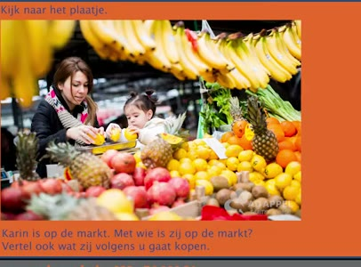
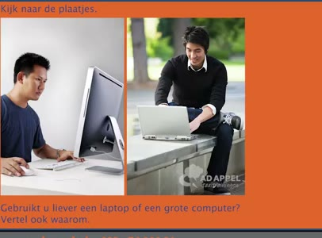
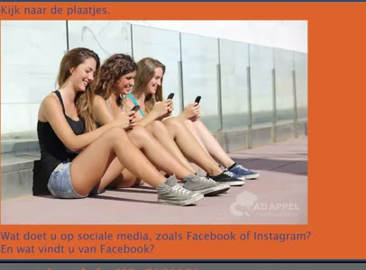
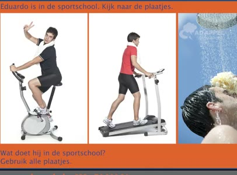
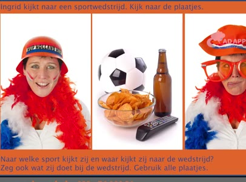

🔊 7 題 🖼️ 5 題 | YouTube ▶
🗣 Veel Nederlanders hebben één of meer huisdieren. Heeft u ook huisdieren? Vertel ook waarom u wel of geen huisdieren heeft.
許多荷蘭人都有一隻或多隻寵物。 您也有寵物嗎？ 請說明您有或沒有寵物的原因。
Ik heb geen huisdieren. Ik vind huisdieren vies. Als ik op vakantie ga, slaap ik het liefst in een luxe vijfsterrenhotel ergens in een warm land aan de zee.
我沒有寵物。我覺得寵物很髒。 當我去度假時， 我最喜歡住在靠海且氣候溫暖的豪華五星級飯店。
🗣 Waarheen gaat u het liefst op vakantie? En vertel ook waarom u dat leuk vindt.
您最喜歡去哪裡度假？ 請也說明您為什麼喜歡那裡。
Ik ga graag op vakantie naar Italië. In Italië wonen leuke mensen en het klimaat is prima.
我喜歡去義大利度假。 義大利有很多可愛的人，而且氣候很好。
🗣 Gaat u wel eens op reis naar een mooie stad? Welke stad vindt u het mooist en hoe gaat u naar die stad?
您會去漂亮的城市旅行嗎？ 您覺得哪個城市最美？您怎麼去那個城市？
Ik vind Parijs een mooie stad. Ik ga naar Parijs met de trein. Ik vier mijn verjaardag het liefst met vrienden en familie.
我覺得巴黎是個美麗的城市。我搭火車去巴黎。 我最喜歡和朋友及家人一起慶祝生日。
🗣 Wat doet u op uw verjaardag?
您生日那天會做什麼？
Ik geef een groot feest op mijn verjaardag. Eten, drinken en dansen met veel vrienden, dat is leuk. Ik gebruik mijn telefoon heel vaak.
我會辦一場大型派對慶祝生日。 吃喝跳舞，和很多朋友一起，非常有趣。 我經常使用手機。
🗣 Waarvoor gebruikt u uw telefoon?
您用手機做什麼？
Ik gebruik mijn telefoon om te bellen met mijn partner en met mijn familie.
我用手機和我的伴侶及家人通話。
🗣 In Nederland regent het heel vaak. Wat vindt u daarvan? En hoe vaak regent het in het land waar u geboren bent?
在荷蘭經常下雨，您覺得如何？ 您出生的國家多久下雨一次？
Ik vind regen in Nederland geen probleem. In mijn land regent het nooit.
我覺得荷蘭的雨沒什麼問題。 我國家幾乎不下雨。
🗣 Lea eet in een restaurant. Wat eet zij volgens u? Vertel ook hoe duur haar maaltijd volgens u is.
Lea 在餐廳用餐。您認為她吃什麼？ 請也說說您覺得她的餐費多少錢。
Zij eet pasta met kaas. Haar maaltijd kost 10 euro.
她吃有起司的義大利麵。 她的餐費是 10 歐元。

🗣 Kijk naar het plaatje. Karin is op de markt. Met wie is zij op de markt? Vertel ook wat zij volgens u gaat kopen.
請看圖片。 Karin 在市場。她和誰一起在市場？ 請也說說您認為她會買什麼？
Zij is met haar dochter. Zij koopt fruit.
她和她女兒一起。她買水果。

🗣 Kijk naar de plaatjes. Gebruikt u liever een laptop of een grote computer? Vertel ook waarom.
請看圖片們。 您比較喜歡用筆電還是大台電腦？ 請也說明原因。
Ik gebruik liever een grote computer. Dat is beter voor mijn ogen.
我比較喜歡用大台電腦。對我眼睛比較好。

🗣 Kijk naar het plaatje. Wat doet u op sociale media, zoals Facebook of Instagram? En wat vindt u van Facebook?
請看圖片。 您在社群媒體，例如 Facebook 或 Instagram 上做什麼？ 您覺得 Facebook 如何？
Ik kijk veel op Facebook. Ik vind het leuk om vrienden te hebben.
我常常看 Facebook。 我覺得有朋友真好。

🗣 Eduardo is in de sportschool. Kijk naar de plaatjes. Wat doet hij in de sportschool? Gebruik alle plaatjes.
Eduardo 在健身房。請看圖片。 他在健身房做什麼？ 請使用所有圖片回答。
Hij loopt. Hij fietst. Hij neemt een douche.
他走路。 他騎腳踏車。他洗澡。

🗣 Ingrid kijkt naar een sportwedstrijd. Kijk naar de plaatjes. Naar welke sport kijkt zij en waar kijkt zij naar de wedstrijd? Zeg ook wat zij doet bij de wedstrijd. Gebruik alle plaatjes.
英格麗德在看一場運動比賽。看看這些圖片。 她在看哪種運動？她在比賽的哪裡觀看？ 也說說她在比賽時做了什麼。用到所有圖片。
Zij kijkt thuis naar een voetbalwedstrijd. Zij drinkt bier en zij draagt oranje kleding.
她在家裡看足球比賽。 她喝啤酒，穿著橘色衣服。